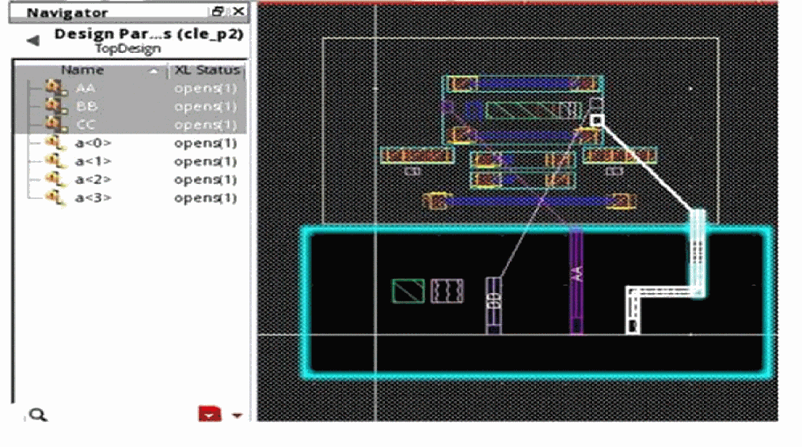

Generating a Temporary Pin in Designer Mode
You need to generate temporary pins in designer mode for space-based routing between design partitions. These pins are generated only on the nets crossing design partitions.
-
Right-click in the Concurrent Layout assistant and choose Generate Temporary Pins
Temporary pins are added to the current design partitions.
-
Net
AAis exactly on the area boundary of the design partition. -
Net
BBis inside the area boundary. -
Net
CCis outside the area boundary.
When you run the Generate Temporary Pins command, pins are generated only on the nets AA and CC.

To select these pins for deleting or cross-selecting their nets:
Related Topics
Generating a Temporary Blockage in Manager Mode
Defining an Area-Based Design Partition
Design Partition Options in Designer Mode
Return to top